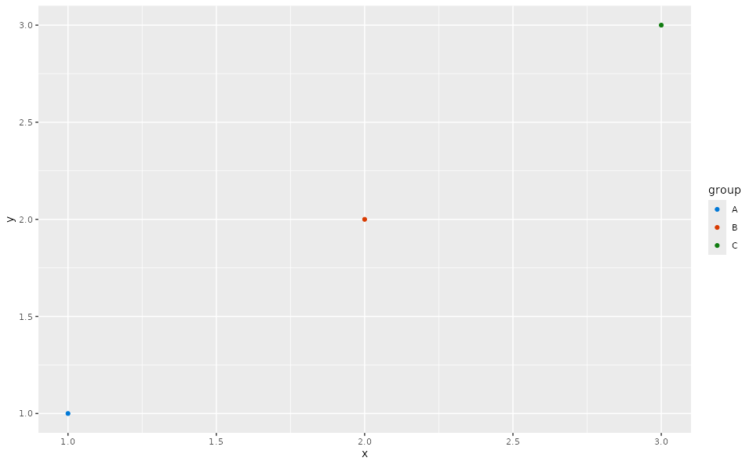

OSP discrete color and fill scales
scale_osp.RdDiscrete ggplot2 scales that apply the OSPSuite color palette per plot,
without mutating global ggplot2 state. Add them to a plot with
plot + scale_colour_osp() or plot + scale_fill_osp(). All
ospsuite.plots plot functions apply these automatically (unless a color
or fill scale is already present), so explicit use is only needed to style
unrelated plots or to override a different scale.
The palette reproduces the previous global behavior of setDefaults():
colorMaps$default (6 colors) is used when there are at most 6 groups,
otherwise colorMaps$ospDefault (50 colors).
Arguments
- ...
further arguments passed on to
ggplot2::discrete_scale().
Examples
library(ggplot2)
df <- data.frame(x = 1:3, y = 1:3, group = c("A", "B", "C"))
ggplot(df, aes(x, y, color = group)) +
geom_point() +
scale_colour_osp()
